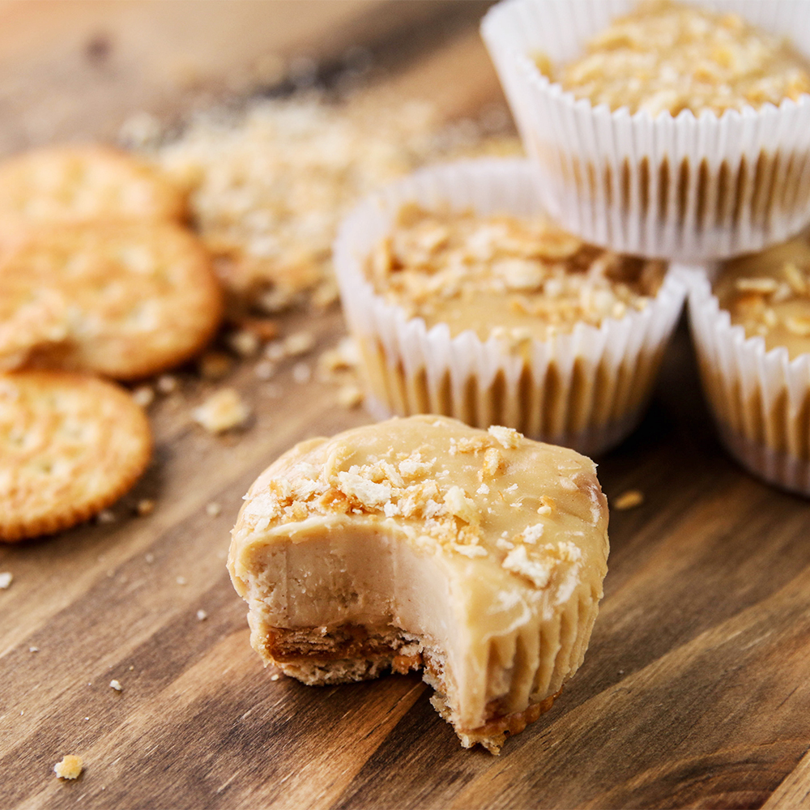

Mini Peanut Butter Cheesecakes

Dscription
Mini peanut butter cup cheesecakes are cupcake-sized
cheesecakes made with ritz crackers, peanut butter
filling, and ritz topping. These individually sized
cheesecakes are rich, decadent, and perfect for any
peanut butter lover.
Ingredients
- 24 ritz crackers
- 16oz. cream cheese
- 1/2 cup sugar
- 1/2 cup peanut butter
- 1/2 cup sour cream
- 1 tsp. vanilla
- 2 eggs
Steps
- Form peanut butter sandwiches with ritz
crackers
- Place them in the bottom of each cup of a
muffin tin
- In a large bowl beat together cream cheese
and sugar
- Then add peanut butter, sour cream, vanilla,
2 eggs, and beat again
- Pour mixture over each peanut butter sandwich
until each cup is 3/4 full
- Top with crushed ritz crackers
- Bake for 22 minutes at 375. Let cool completely
and then refrigerate for 2 hours
- Enjoy